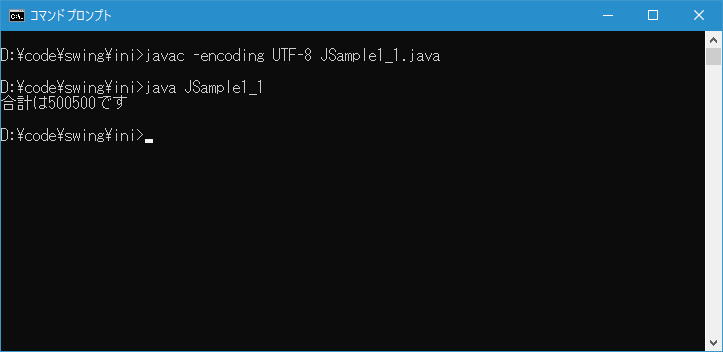
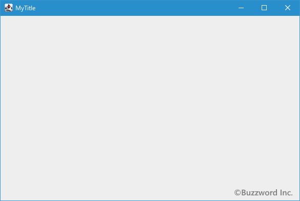
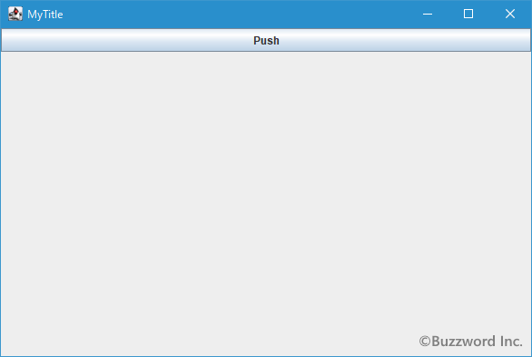
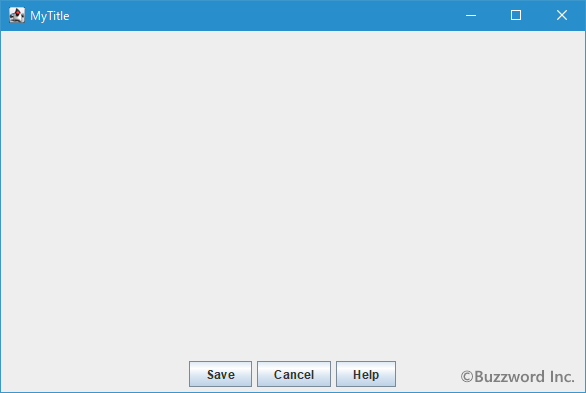
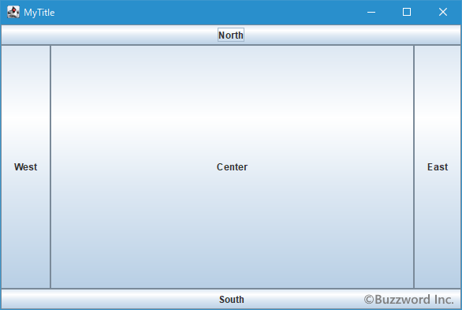
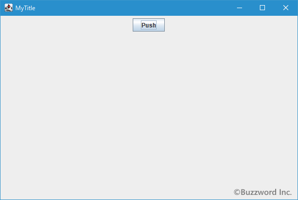
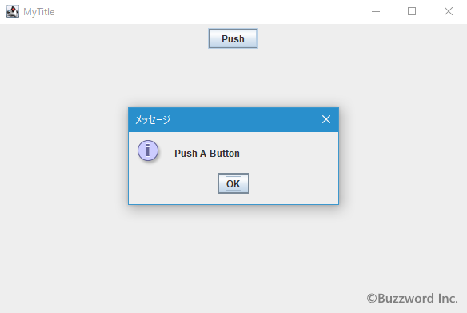

Swingを使ったアプリケーションとは
Swing を使用することで GUI を使ったアプリケーションを作成することができます。ここでは簡単に Swing を使ったアプリケーションの特徴について解説します。
コマンドラインプログラムとの違い
コマンドラインで動作するプログラムとは、例えば次のようなプログラムです。
class JSample1_1{
public static void main(String args[]){
int sum = 0;
for (int i = 1; i <= 1000; i++){
sum += i;
}
System.out.println("合計は" + sum + "です");
}
}
このプログラムでは1から1000までを順に加算した結果を出力します。実際に実行した結果は次のようになります。

このようにプログラムを実行すると、定められた手順を順に実行し場合によっては結果を出力した後でプログラムが終了します。つまり実行＞結果出力＞終了までが一連の流れとして行われます。もちろんこのような単純なものばかりではなく、ユーザーからの入力を待って処理を実行するものもありますし、終了の指示を出すまで繰り返しプログラムを実行するものもありますが、基本的にコマンドラインでのプログラムは先ほどのサンプルのような動作をします。
-- --
Swing は GUI のアプリケーションを作成するために使用されるものです。 GUI とは Graphical User Interface のことでフレームを持ったアプリケーションでボタンやテキストボックスなどグラフィカルな部品を使って操作を行うものです。
Swing を使ったプログラムとは、例えば次のようなプログラムです。
import javax.swing.JFrame;
class JSample1_2{
public static void main(String args[]){
JFrame frame = new JFrame("MyTitle");
frame.setBounds(100, 100, 600, 400);
frame.setDefaultCloseOperation(JFrame.EXIT_ON_CLOSE);
frame.setVisible(true);
}
}
このプログラムではフレームを1つ作成して表示するだけのプログラムです。実際に実行した結果は次のようになります。

このプログラムはフレームを画面上に表示させて終了したわけではありません。現時点でもプログラムは実行されたままです。実際プログラムを実行したコマンドプロンプトでは、まだコマンドプロンプトに制御は戻ってきていません。
利用者は Windows 画面に現れたフレームに対して様々な動作を行います。例えばテキストボックスに文字を入力したり、リストから項目を選択したり、ボタンを押したりします。どんな部品をフレームに表示するのか、そして利用者が行った操作に応じて何を行うのかを Swing を使ったプログラムでは記述していくことになります。
コンテナとコンポーネント
Swing を使ったプログラムではベースとなるウィンドウを作成します。そしてウィンドウの中に様々な部品を追加していくことになります。そこでまずはベースとなるウィンドウを作成しなければいけませんが、 Swing ではフレーム、ダイアログ、アプレットの3種類を大元のウィンドウとして利用することができます。
フレームは JFrame クラス、ダイアログは JDialog クラス、アプレットは JApplet クラスで定義されており、こららのクラスからオブジェクトを作成することで土台が作成されます。これらは Container クラスのサブクラスとして定義されています。 Swing では他のコンポーネントを追加することできるオブジェクトをコンテナと呼んでおり、特にこの3つのクラスのオブジェクトはトップレベルコンテナと呼ばれます。
先ほど Swing を使ったプログラムとはで作成したサンプルはトップレベルコンテナの一つである JFrame クラスのオブジェクトを作成しています。トップレベルコンテナを作成したら、次にコンポーネントを作成してトップレベルコンテナに追加していきます。コンポーネントは JComponent クラスのサブクラスとして定義されており、ボタンやラベルなど用途に応じて数多くのクラスが定義されています。
例えばコンポーネントの一つでありボタンを作成するためのクラスである JButton クラスのオブジェクトを作成してフレームに追加するには次のように記述します。
import javax.swing.JFrame;
import javax.swing.JButton;
import java.awt.Container;
import java.awt.BorderLayout;
class JSample1_3{
public static void main(String args[]){
JFrame frame = new JFrame("MyTitle");
frame.setBounds(100, 100, 600, 400);
frame.setDefaultCloseOperation(JFrame.EXIT_ON_CLOSE);
JButton button = new JButton("Push");
frame.getContentPane().add(button, BorderLayout.NORTH);
frame.setVisible(true);
}
}
実行してみるとボタンがウィンドウの上部に表示されていることが分かります。

Swing のアプリケーションではこのようにコンテナを作成し、部品となるコンポーネントを追加していくことになります。
レイアウトマネージャーによるコンポーネントの配置
ボタンやラベルなどのコンポーネントをフレームなどの追加していく場合、 Swing ではレイアウトマネージャーと呼ばれるものを使います。細かいサイズや位置を指定するのではなく、複数用意されたレイアウトマネージャーの中から希望する画面構成にあったものを選び、実際の配置はレイアウトマネージャーに任せます。
例えばフレームの下部にボタンを横一列に並べたい場合には FlowLayout と呼ばれるレイアウトマネージャーが適しています。 FlowLayout はコンポーネントを追加した順に右へ右へと追加していくレイアウトマネージャーです。またこのレイアウトマネージャーは追加されるコンポーネントのサイズを自動調整しません。
import javax.swing.*;
import java.awt.*;
class JSample1_4{
public static void main(String args[]){
JFrame frame = new JFrame("MyTitle");
frame.setBounds(100, 100, 600, 400);
frame.setDefaultCloseOperation(JFrame.EXIT_ON_CLOSE);
JPanel p = new JPanel();
JButton btn1 = new JButton("Save");
JButton btn2 = new JButton("Cancel");
JButton btn3 = new JButton("Help");
p.add(btn1);
p.add(btn2);
p.add(btn3);
frame.getContentPane().add(p, BorderLayout.SOUTH);
frame.setVisible(true);
}
}
実行してみると3つのボタンが横に並んで表示されています。

また画面全体の大まかなレイアウトを行いたい場合には BorderLayout と呼ばれるレイアウトマネージャーが適しています。 BorderLayout は画面全体を 5 つの領域に分けます。そして各領域にコンポーネントを配置していきます。コンポーネントを追加する時はどの位置に配置したいのかを合わせて指定しなければなりません。このレイアウトマネージャーの場合には追加されるコンポーネントのサイズを自動的に調整します。
import javax.swing.*;
import java.awt.*;
class JSample1_5{
public static void main(String args[]){
JFrame frame = new JFrame("MyTitle");
frame.setBounds(100, 100, 600, 400);
frame.setDefaultCloseOperation(JFrame.EXIT_ON_CLOSE);
JButton btn1 = new JButton("North");
JButton btn2 = new JButton("South");
JButton btn3 = new JButton("West");
JButton btn4 = new JButton("East");
JButton btn5 = new JButton("Center");
frame.getContentPane().add(btn1, BorderLayout.NORTH);
frame.getContentPane().add(btn2, BorderLayout.SOUTH);
frame.getContentPane().add(btn3, BorderLayout.WEST);
frame.getContentPane().add(btn4, BorderLayout.EAST);
frame.getContentPane().add(btn5, BorderLayout.CENTER);
frame.setVisible(true);
}
}
実行してみると5つのボタンが上下左右中央に配置されて表示されています。

このようにレイアウトマネージャーをコンテナに設定すると、追加されたコンポーネントがどのように配置されるのか、そして配置されるコンポーネントのサイズをどうするのかが自動的に決まります。
イベントを使った処理の実行
Swing ではフレーム上に配置されたボタンが押された時に何らかの処理を実行したい場合、イベントと呼ばれる機能を使います。
アプリケーションは様々なコンポーネントから構成されていますが、コンポーネントの上をマウスが動いたりキーボードから文字が入力されたりと利用者が何らかの操作を行った時に、その操作に応じてイベントと呼ばれるものを発行します。イベントはコンポーネント毎に発行されますし、利用者の様々な操作に応じて別々のイベントが発行されるため数多くのイベントが常に発行されています。
イベントの中で必要なものだけを受け取るようにすることができます。例えばボタンをクリックされたイベントは欲しいけれど、ボタンの上をマウスが移動したイベントは必要ないのであれば、ボタンのクリックのイベントだけを受け取りように設定しておきます。そしてクリックされたイベントを受け取った時に処理を記述しておきます。
次の例ではボタンがクリックされた時のイベントを受け取るように設定し、クリックされたらダイアログを表示しています。
import javax.swing.*;
import java.awt.*;
import java.awt.event.*;
class JSample1_6 extends JFrame implements ActionListener{
public static void main(String args[]){
JSample1_6 frame = new JSample1_6("MyTitle");
frame.setVisible(true);
}
JSample1_6(String title){
setTitle(title);
setBounds(100, 100, 600, 400);
setDefaultCloseOperation(JFrame.EXIT_ON_CLOSE);
JPanel p = new JPanel();
JButton btn = new JButton("Push");
btn.addActionListener(this);
p.add(btn);
getContentPane().add(p, BorderLayout.CENTER);
}
public void actionPerformed(ActionEvent e){
JLabel label = new JLabel("Push A Button");
JOptionPane.showMessageDialog(this, label);
}
}
実行してみるとボタンが1つ表示されています。

ボタンをクリックすると、クリックされたというイベントをプログラムは受け取り、ダイアログを表示させてメッセージを表示します。

-- --
Swing を使って作成するアプリケーションとはどのようなものなのかについて簡単に解説しました。
( Written by Tatsuo Ikura )

著者 / TATSUO IKURA
初心者～中級者の方を対象としたプログラミング方法や開発環境の構築の解説を行うサイトの運営を行っています。